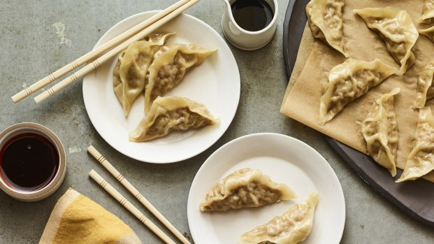
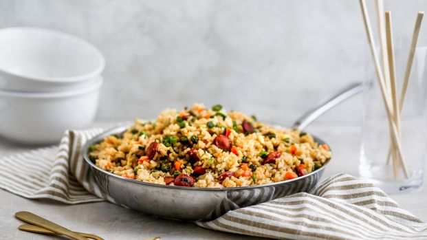
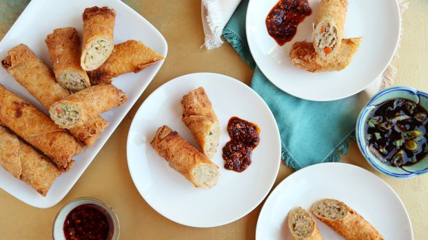

Steamed Pork & Scallion Dumpling
These dumplings are stuffed with a savory filling of pork and scallions, then steamed to perfection. The dipping sauce is salty and sweet with a just a hint of chili oil.
Sticky Chinese Sausage Fried Rice
This sticky fried rice is slightly crisped, studded with Chinese sausage and coated in a rich flavorful sauce.
Easy Egg Roll
I love this recipe and have been making these for a couple of years. An easy variation I have come up with is to use a purchased, fully-cooked rotisserie chicken, shred it, then toss it in teriyaki and garlic. Then add the bagged coleslaw mix and fold it all into wrappers. Delicious and time-saving!